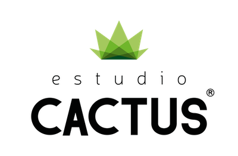

Proyectos
Una selección de case studies donde diseño, investigación y estrategia se unen.

LoLocal
App marketplace para conectar comercios locales con compradores del barrio. Diseño desde cero con foco en comunidad, confianza y descubrimiento local.
UX ResearchUI DesignDesign SystemFigma

Remitly
Rediseño del flujo de confirmación y seguimiento de transferencias para reducir fricción y desconfianza en usuarios frecuentes.
FintechUX ResearchUX WritingPrototyping
🍔
PedidosYA
Rediseño conceptual para mejorar la experiencia en la app de pedidos de comida, con foco en navegación y reducción de fricción.
RediseñoMobileUX Writing
🎵
Telepianxs
Plataforma digital para conectar profesores y alumnos de piano de forma online. Diseño de producto end-to-end.
UX ResearchProduct DesignFigma

Estudio Cactus
Challenge UX/UI real para proceso de selección. Rediseño de la navegación del mapa 3D interactivo de la Terminal AMPT Pier 400 en Long Beach.
ChallengeUX/UIPrototipado